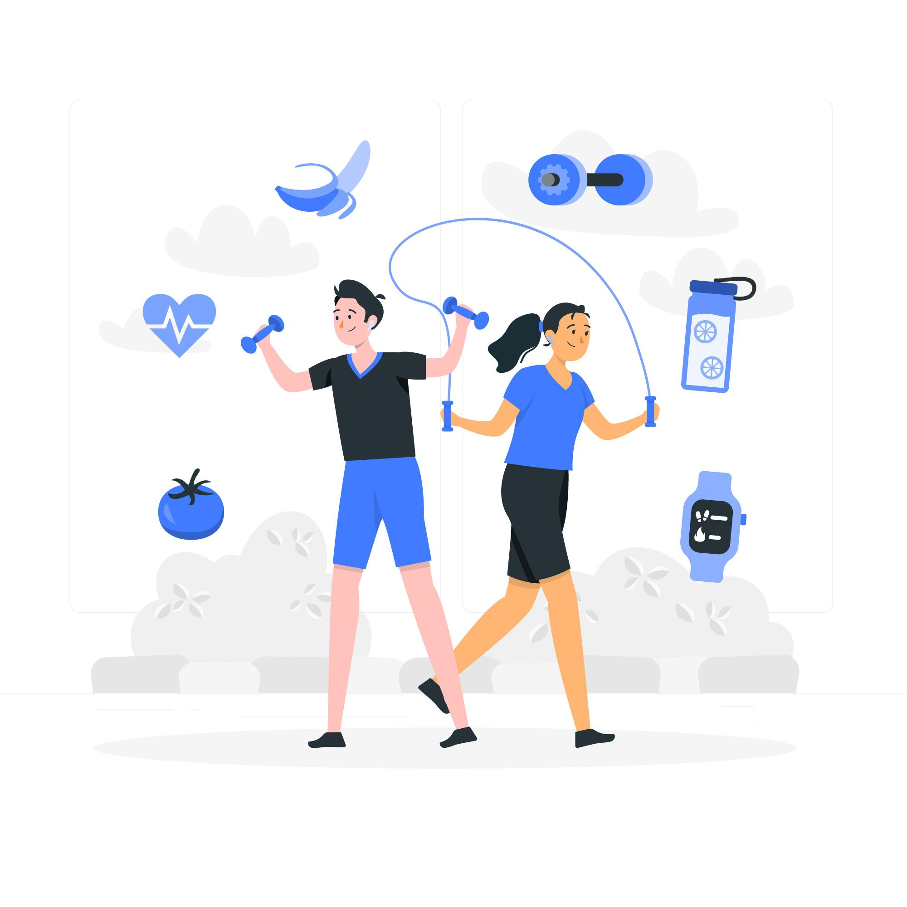
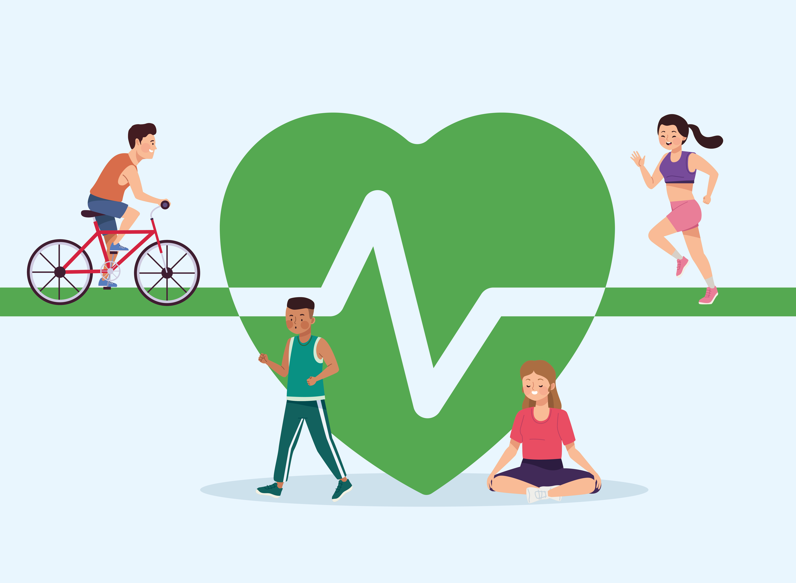
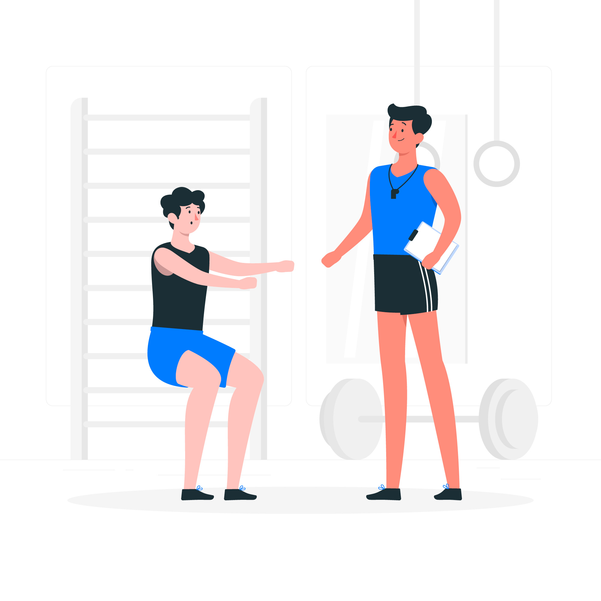
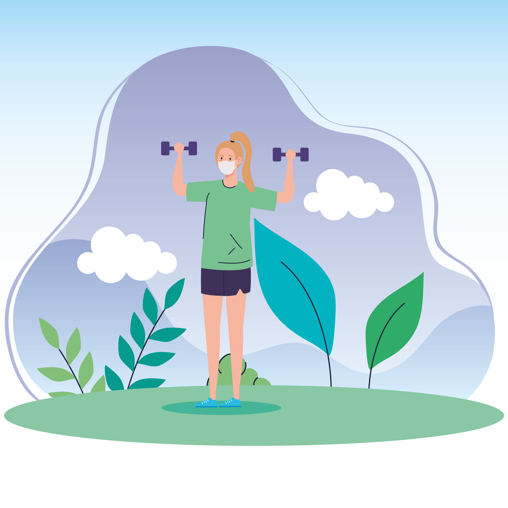

Wellness and fitness are always connected, and regular exercise is a powerful method for disease avoidance, mental health, and overall quality of life. Regularity in various forms of exercise cardiovascular, strength training, flexibility, and balance is healthy for the heart, muscle development, bone density, and coordination. Regular movement enhances blood glucose control, reduces blood pressure, strengthens immune function, and reduces the risk of chronic disease development like type 2 diabetes, stroke, and certain cancers. Fitness is also useful in managing the body weight by increasing metabolism and facilitating fat breakdown without reducing lean muscle. In addition to the physiological benefits, exercise is a proven mechanism for improving mental health. It helps reduce depression and anxiety symptoms, enhances cognitive function, helps with better sleeping, and assists in emotional resilience. Exercise endorses the release of endorphins, boosts self-esteem, and helps create a feeling of life satisfaction.
A long-term wellness can be achieved by embracing an overall healthy lifestyle that is synergistically blends fitness with healthy nutrition, correct hydration, and quality sleeping. It should be understood that fitness is not a blanket consideration—age, medical background, level of fitness, and personal goals all dictate what types of activities will be both safe and useful. Exercise programs for adults, pregnant women, the disabled, or those with chronic illness can allow them to maintain activity in a safe way. Injury prevention through proper warm up, stretching, cross-training, and relaxation is crucial to making a successful fitness program. Also important is the mental dimension of fitness: creating realistic goals, monitoring progress, transcending plateaus, and maintaining motivation are central to the acquisition of lifelong habits. Through walking, swimming, yoga, sports, or weightlifting at the gym, finding joy and consistency in movement is the secret to healthiness.

Some physical activity advantages to the brain function happen right away after a bout of moderate-to-vigorous physical activity. Advances are such as quicker thinking or cognition among children aged 6 to 13 years and reduced short-term worry in adults. Regular exercise can keep your thinking, learning, and judgment skills sharp with age. It can also reduce your risk for anxiety and depression and help you with sleeping.
Both dietary and exercise patterns play important functions in weight management. You can gain weight when you consume more calories than the calories burned. If you are not very active, work up to 150 minutes per week of moderate physical activity. This could be outdoor work or dancing. You might hit the 150 minutes per week target at 30 minutes a day for 5 days per week, 22 minutes a day, or whatever is most convenient for you. People vary in how much physical exercise they need for weight management. You may need to be more active than the average person to reach or maintain a healthy weight.
Heart disease and stroke are two leading causes of death. Getting at least 150 minutes of moderate exercise each week can reduce the risk of getting these diseases. You can bring yourself to an even lower risk with additional more exercise. Regular physical activity can also reduce your blood pressure and help your cholesterol.
Regular physical activity will decrease your risk of having the metabolic syndrome and type 2 diabetes. Metabolic syndrome is some combination of high blood pressure, high triglycerides, low high-density lipoproteins (HDL) cholesterol, excess fat around the waist, or high blood sugar. Regular habits of physical activity make people feel the benefits even of less than 150 minutes per week of moderate-level physical activity. Additional amounts of physical activity could further decrease the risk.

In terms of increasing your health through exercise, home and gym exercise have varying benefits, and optimal choice typically depends on individuality, goals, and lifestyle. Home exercises are easy, flexible, and personal, enabling people to make exercise a part of life without commuting or competing with others. With minimal or even no gear, a person can still achieve cardiovascular health, build strength, and improve mobility in their own house. Home workout is ideal for novices, busy parents, or someone who prefers a less tension filled setting.
Gym workout, on the other hand, offers exposure to various equipment, professional guidance, and structured classes, which can make workout variety and intensity higher. The gym setting benefited in particular for people with certain body composition or strength goals, or who work more effectively within a more inspirational or social environment. Gyms often has professional trainers, which can prevent injury and proper form. In general, both environments can benefit heart health, weight management, mental health, and fitness. The key is to be consistent and choose the environment that promotes more participation in physical activity.

Motivation for your healthy journey can be difficult to get, but beginning the development of healthy habits in the long term starts with setting practical, achievable goals. Begin with small, incremental changes a 20 minute walk every day or switching from sugary drinks to water and expand on them. Tracing your progress, be it through a fitness app, notebook, or photos, allows you to observe your progress and get hyped up. Having others around you who believe in you friends, relatives, or workout partners can keep you going and healthy living more enjoyable. Try something new with exercises, or wellness activities such as meditation or yoga. Make sure to remind yourself why you started increased energy, enhanced immunity, stability of mind—and reflect on how much you have already accomplished not on how much more there is is to do. Celebrate small victories to gain momentum, and keep in mind that motivation will wax and wane—but discipline and habit are what really produce lasting health outcomes. Treat yourself gently through setbacks and view them as chances to learn, not as excuses to quit.
